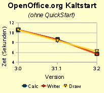
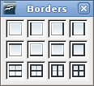
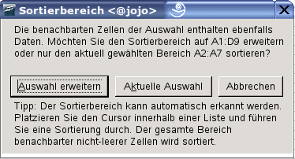
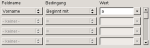
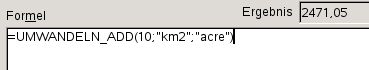
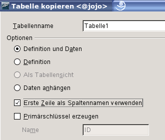
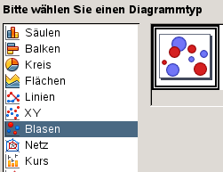

Neue Funktionen in OpenOffice.org 3.2
Allgemeine Verbesserungen
Kürzere StartzeitSowohl bei der Tabellenkalkulation CALC als auch bei der Textverarbeitung WRITER wurde gegenüber der OpenOffice.org-Version 3.0, die vor gut einem Jahr veröffentlicht wurde, die Zeit beim 'Kaltstart' um fast die Hälfte (46%) verkürzt, wie unsere Entwicklertests ergeben haben (die Ergebnisse sind abhängig von Betriebssystem und Hardware unterschiedlich). |

|
Verbesserungen bei der Unterstützung des OpenDocument Formats (ODF)Der Standard "OpenDocument Format" (ODF), der von der Organization for the Advancement of Structured Information Standards (OASIS) veröffentlicht und als ISO-Standard anerkannt wurde, definiert internationale Kompatibilitätskriterien für die digitale Speicherung von Dokumenten. Diese Standards betonen die Bedeutung von Interoperabilität und intelligentem Informationsaustausch und versuchen beispielsweise sicherzustellen, dass heute auf beliebigen Computersystemen erstellte Office-Dokumente überall auf jedem anderen Computersystem gelesen und verarbeitet werden können, und dies auch mit künftigen Technologien (Rechnern und Programmen). OpenOffice.org 3.2 hat weitere Schritte zur Erfüllung von ODF 1.2 unternommen, eine engere Einhaltung der OASIS ODFF/OpenFormula-Spezifikationen eingeschlossen.
|
|
Unterstützung proprietärer DateiformateOpenOffice.org 3.2 bietet eine verbesserte Unterstützung anderer verbreiteter Office-Dokumenttypen. Dies betrift u.a.:
|
|
Unterstützung Postscript-basierter OpenType-SchriftartenViele hochwertige kommerzielle und freie OpenType-Fonts basieren auf Postscript-Schriften. Sie werden jetzt von OpenOffice.org bei Formatierung, Druck, PDF-Export und Bildschirmanzeige unterstützt. |
|
 WRITER
WRITER
 CALC
CALC
Zellumrandung unterstützt jetzt Mehrfachauswahl von ZellenBisher konnten Umrandungen nur auf einen rechteckigen Zellbereich angewandt werden. Jetzt kann jede beliebige Auswahl von Zellen mit Rändern versehen werden. Aus der Auswahl wird eine Liste rechteckiger Bereiche bestimmt, und jeder Bereich wird mit inneren/äußeren Umrandungen versehen. |

|
Verfeinerte Auto-AusfüllfunktionEnthielt die Startzelle einen Ausdruck mit einer Zahl am Anfang und am Ende wie "10xy1", wurde bisher die erste Zahl erhöht: 11xy1, 12xy1 etc. Jetzt wird die Zahl am Ende erhöht, so dass z.B. IP-Adresslisten (10.0.0.1, 10.0.0.2, ...) erzeugt werden können. |
|
Verbesserungen beim Sortieren
Wenn "Sortieren" mit einer Auswahl von Zellen aufgerufen wird, die nicht dem vermutlichen Sortierbereich entspricht,
fragt ein neuer Dialog, ob die Auswahl auf weitere Zellen erweitert werden soll. |

|
Verbesserte Behandlung verbundener Zellen
Der Inhalt verbundener Zellen kann jetzt aus der Zwischenablage in andere verbundene Zellen eingefügt werden. Statt einer Fehlermeldung
wird jetzt die Verbindung bei den ursprünglichen Zellen aufgehoben. |
|
Komplexes Kopieren und EinfügenDieses neue Feature erweitert die bisherige Kopier- und Einfügefunktionalität von CALC um die Möglichkeit, mehrere, nicht-zusammenhängende Bereiche zu kopieren. Beim Einfügen werden alle kopierten Daten zu einem einzigen Bereich entweder horizontal oder vertikal zusammengefasst. Einige Beschränkungen beim Kopieren der Bereiche stellen sicher, dass der Zielbereich rechteckig wird. |
|
Verbesserungen bei den Statistik-Funktionen
|
|
Zeilenwechsel in Formeln bleiben erhaltenMit Strg+Eingabe erzeugte Zeilenwechsel in Zellen mit Text bleiben jetzt in Formeln erhalten. Zuvor war der Zeilenwechsel durch ein Leerzeichen ersetzt worden. Das Zeichen Zeilenwechsel kann mit den Funktionen SUCHEN, [SW]VERWEIS oder VERGLEICH mit Hilfe des regulären Ausdrucks \n gesucht werden. |
|
Umwandlung von Zeichenketten in Zahlen
Bei der Interpretation eines Formelausdrucks werden jetzt eingesetzte (Text-) Zeichenketten zu Zahlenwerten konvertiert,
sofern die Konversion eindeutig möglich ist. Falls nicht, wird ein #WERT-Fehler ausgegeben. Führende und nachfolgende Leerzeichen werden ignoriert. |
|
Erweiterte Funktionalität für DatenfilterDer Dialog "Standard-Filter" zeigt nun 4 statt 3 Bedingungszeilen sowie einen Roll-Balken, über den man insgesamt bis zu 8 Bedingungen festlegen/definieren kann. Der Filter unterstützt jetzt auch die Bedingungen 'Enthält', 'Enthält nicht', 'Beginnt mit', 'Beginnt nicht mit', 'Endet mit' und 'Endet nicht mit'. |

|
Verbessertes Umschalten zwischen relativen und absoluten BezügenDas Tastaturkürzel Umschalt+F4 schaltet zwischen relativen und absoluten Zellbezügen um und kann jetzt auch auf eine Auswahl angewendet werden. Das Umschalten wirkt sich auf alle Zellen mit Formeln in der Auswahl aus. |
|
Viele neue Einheiten für UMWANDELN_ADDDie CALC-Funktion UMWANDELN_ADD (in anderen Anwendungen auch Excel CONVERT genannt) wandelt Einheiten, etwa Quadratkilometer in Hektar. In Version 3.2 sind viele zusätzliche "Umwandlungsfaktoren" implementiert worden, wie sie in OASIS ODFF/OpenFormula definiert sind. |

|
Neue UNICODE- und UNIZEICHEN-FunktionenDie neuen CALC-Funktionen UNICODE und UNIZEICHEN wurden wie in der OASIS ODFF/OpenFormula-Spezifikation definiert implementiert.
|
|
DRAW
IMPRESS
 MATH
MATH
Änderung im Math-MenüDer Menüeintrag "Ansicht / Auswahl" heißt jetzt "Ansicht / Formelelemente". |
|
 BASE
BASE
Datenbank-Assistent anpassbarMit OpenOffice.org 3.2 wird eine Konfigurationsmöglichkeit eingeführt, mit der festgelegt werden kann, ob die Option "Neue Datenbank erstellen" im Datenbank-Assistenten (Datei/Neu/Datenbank) verfügbar sein soll oder nicht. |
|
Einfacheres Kopieren von Abfragen zwischen Datenbank-DokumentenBeim Kopieren von Abfragen zwischen Datenbank-Dokumenten fragt BASE nicht mehr nach einem Zielnamen, es sei denn beim Kopiervorgang würde ein existierender Tabellenname überschrieben. |
|
Datenbank-Formulare jetzt "zoombar"Die Ansicht bzw. Darstellung von Datenbank-Formularen ist jetzt wie bei anderen Dokumenten "zoombar", d.h. in der Größe veränderlich. Die derzeitige ‹Strg+Mausrad›-Funktionalität wurde um den Menüeintrag Ansicht/Maßstab und den Zoom-Regler in der Statuszeile ergänzt. |
|
Intelligenterer Import nach BASEDer Assistent zum Kopieren von Tabellen enthält jetzt eine zusätzliche Auswahloption, die beim Kopieren von RTF- oder HTML-Daten in eine Datenbank auswählbar wird. Die Option lautet "Erste Zeile als Spaltennamen verwenden": Wenn sie aktiviert ist, werden die Daten der ersten Datenzeile die Feld- oder Spaltennamen erzeugt, andernfalls wird die erste Zeile als normale Datenreihe behandelt. |

|
|
Weitere Details zu den Neuerungen in BASE sind im Wiki aufgelistet. |
|
CHART
Neue DiagrammtypenDer CHART-Assistent zum Erstellen von Diagrammen kennt jetzt auch Blasendiagramme (bubble charts) und eine neue Variante von Netz- oder Radardiagrammen, die flächengefüllten Netzdiagramme. |

|
Verbesserte Benutzerfreundlichkeit von CHARTDie Chart-Oberfläche wurde zur Verbesserung der Benutzerfreundlichkeit überarbeitet. Anwender werden bemerken, dass das allgemeine Tag "Objekteigenschaften" durch spezifischere Begriffe ersetzt wurde wie z.B. Format Legende.... Die Kontextsensitivität der Menüs wurde verbessert, um zu gewährleisten, dass die benötigten Werkzeuge nur einen Mausklick entfernt sind. Für alle Details siehe den GullFOSS Blogeintrag. |
|
Verbesserte DatenbeschriftungDie Optionen für die Datenbeschriftung wurden erweitert. Nun ist es möglich, die Beschriftungen zu drehen. Das kann bei Säulendiagrammen Überlappungen vermeiden. |
|
Registerkarte Asiatische Tyographie bei DiagrammelementenEine neue Registerkarte Asiatische Typographie ist bei Titel, Legende, Achsen und Datenreihen verfügbar. Sie enthält eine Option zur Aktivierung bzw. Deaktivierung der Zwischenräume zwischen den verschiedenen Texttypen. |
|
Internationalisierung und Sprachunterstützung (Lokalisierung)
Neue Sprachen
Neu hinzugekommen sind in OpenOffice.org 3.2 die Sprachinformationen (Lokalisierungen) für Oromo (Äthiopien) [om-ET],
Uygurien (China) [ug-CN], Altgriechisch [grc-GR], Somali (Somalia) [so-SO], Ober- [hsb-DE] und Untersorbisch [dsb-DE],
Asturisch (Spanien) [ast-ES], Yiddisch (Israel) [yi-IL], Arabisch (Oman) [ar-OM], Sardisch (Italien) [sc-IT] und Quechua (Ecuador) [qu-EC].
|
|
Japanische NamensreihenfolgeBei japanischen Gebietsschemata ist die Reihenfolge der Felder Vorname / Nachname im Register "Benutzerdaten" umgekehrt (Nachname, Vorname). Dieses Feature hängt nicht von der Oberflächensprache sondern nur vom ausgewählten Gebietsschema ab. |
|
Unterstützung der Graphite-Font-TechnologieOpenOffice.org unterstützt jetzt die Graphite-Technologie zur besseren Darstellung von Zeichen von Minderheitensprachen. Diese Technologie erleichtert die Unterstützung von Minderheitensprachen. Für die spezifischen Bedürfnisse einer bestimmten Minderheit muss damit nur noch ein Font entwickelt werden. |
|